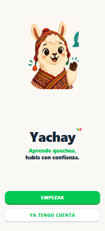
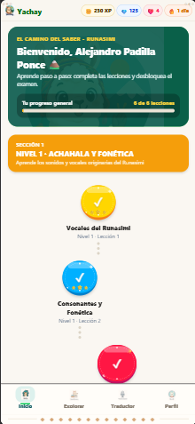
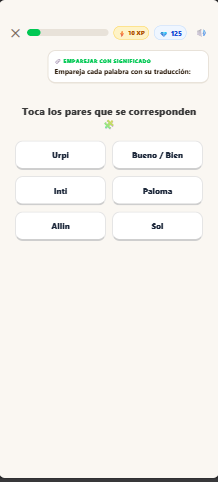
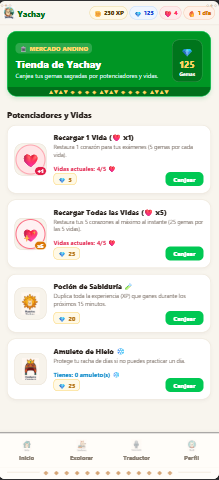
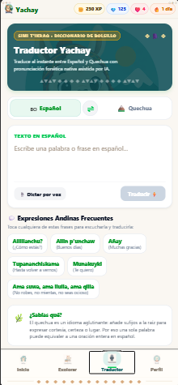
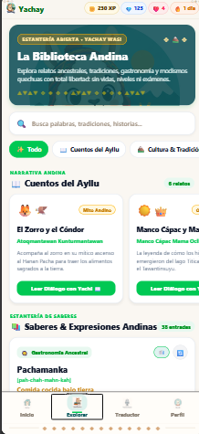
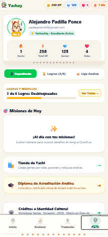
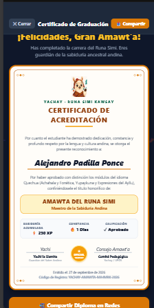

Descubre un nuevo idioma, conecta con la cultura andina y abre la puerta a nuevas oportunidades con un método gamificado y progresivo.

Aprende con palabras, frases y expresiones del quechua cotidiano, con un enfoque en la cultura andina.
Practica tu pronunciación y recibe correcciones con inteligencia artificial.
Gana experiencia, supera niveles y mantén tu racha de aprendizaje.
Traduce frases del español al quechua y viceversa, cuando lo necesites.
Lleva tu aprendizaje a donde quieras, incluso sin internet.
El Quechua (Runa Simi) es la voz viva de los Andes y portador de una cosmovisión milenaria de armonía, respeto y reciprocidad (Sumaq Kawsay). Yachay nace como un compromiso para revitalizar nuestra lengua originaria y ponerla al alcance de las nuevas generaciones a través de la tecnología accesible y el aprendizaje lúdico.
De personas hablan Quechua en Sudamérica, consolidándose como la lengua indígena viva más hablada de toda América.
En entornos urbanos, menos del 25% de los hijos de quechuahablantes aprenden la lengua en su hogar por falta de herramientas lúdicas e interactivas.
Yachay convierte el smartphone en un aula interactiva de bolsillo, demostrando que una lengua milenaria vive y evoluciona en la era digital.
Una lengua no desaparece porque quienes la hablen dejen de existir, sino porque el mundo deja de escucharla y las nuevas generaciones dejan de hablarla. Cada lección completada en Yachay es una semilla viva para que el Runa Simi siga latiendo.
Al iniciar la app, la llamita Yachi te da una cálida bienvenida. Pulsa Empezar para iniciar de inmediato tu ruta de aprendizaje o ingresa con Ya tengo cuenta para sincronizar tu progreso y lecciones.

En la pestaña Inicio encuentras el sendero formativo Nivel 1 - Achahala y Fonética con las lecciones de vocales y consonantes del Runasimi. La barra superior muestra tus puntos XP (⚡), gemas sagradas (💎), vidas (❤️ 4/5) y tu racha de días (🔥).

Pon a prueba tu comprensión relacionando términos en quechua con su traducción al español: como Urpi (Paloma), Inti (Sol) y Allin (Bueno / Bien). Cuenta con audio nativo y barra de progreso en vivo.

Canjea tus gemas sagradas ganadas al estudiar por potenciadores esenciales: recarga vidas individuales o completa tus 5 corazones, activa la Poción de Sabiduría para duplicar tus puntos de XP o consigue el Amuleto de Hielo para proteger tu racha.

Traduce al instante entre español y quechua con pronunciación fonética nativa asistida por IA. Incluye dictado por voz y acceso rápido a expresiones andinas cotidianas como Allillanchu?, Allin p'unchaw, Añay y el saludo Tupananchiskama.

En la sección Explorar, accede a lecturas ancestrales con total libertad: sin vidas, niveles ni exámenes. Disfruta los Cuentos del Ayllu como El Zorro y el Cóndor, la leyenda de Manco Cápac y Mama Ocllo y saberes sobre la gastronomía ancestral como la Pachamanka.

En la pestaña Perfil, consulta tus estadísticas generales: lecciones completadas, porcentaje de precisión, medallas obtenidas y logros alcanzados en tu viaje por el Qhapaq Ñan del quechua.

Al culminar satisfactoriamente los módulos de Achahala, Yupeykuna y Expresiones del Ayllu, Yachay te confiere el Certificado de Acreditación Sentimental, reconociéndote con el título honorífico de Amawta del Runa Simi (Maestro de la Sabiduría Andina) como guardián de la sabiduría ancestral andina con código de registro y opción de compartirlo en redes.
Instala la APK oficial en tu dispositivo Android o explora el código fuente del proyecto en GitHub. Da hoy el primer paso hacia el aprendizaje del Quechua.
Conéctate con el Ayllu Yachay. Envíanos tus aportes lingüísticos, sugerencias para la app o solicitudes de coordinación académica.
Completa el formulario y nuestro equipo te responderá a la brevedad posible.
Sede Cochabamba, Bolivia — Espacio universitario de investigación pedagógica, desarrollo de software y validación comunitaria de Yachay.